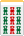
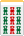

（16）運否天賦(中麻)解答
|
[3818] 赤三筒 2013/12/06(Fri)
二門マチでテンパイしました。高目で５７点、安目だと１２点になります。
さらに１点役一つと門前清をのぞいて、成立する役がまったく異なります。
さて どのようなテンパイでしょうか。
  
もし点数間違ってたらゴメンナサイ。。＞（＿＿）＜
|
[3846] 通りすがり 2014/01/03(Fri)
中麻牌謎No16「運否天賦」
   マチ マチ
→ 一色四同順、全帯幺、平和、缺一門、門前清
（48+4+2+1+2=57）
→ 双暗刻、四帰一×２、幺九刻×２、無字、缺一門、門前清
（2+2*2+1*2+1+1+2=12）
|
[3847] 赤三筒 投稿日：2014/01/04(Sat)
正解です。
九索が頭で順子が７８９だと全大、１２３でも筒子だと推不倒になってしまいます。
これに似た形が、あるサイトに「高目ハネマン安目チョンボ」として載っているのを見つけたので、それを参考にした出題でした。
|
[3848] 通りすがり 2014/01/04(Sat)
回答としては
A  
B
C 
の３通り。
このうち出題者の意図を汲むなら、Aが最適解かも。
※問題にが２枚ある と記述されているので、を雀頭と想定していること。
また回答者が残りを11112222333の形だと判断し、筒子だと推不倒になると気付かないという ひっかけを狙って）
|